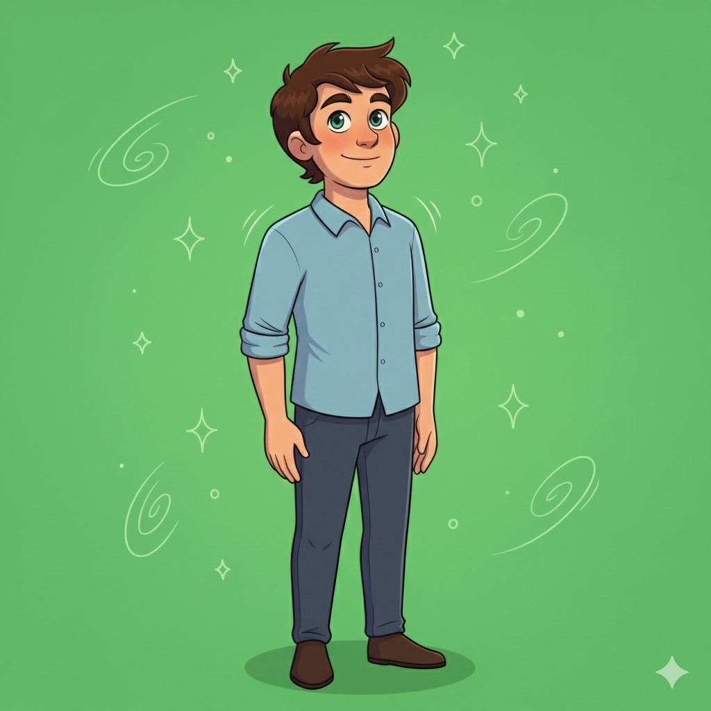
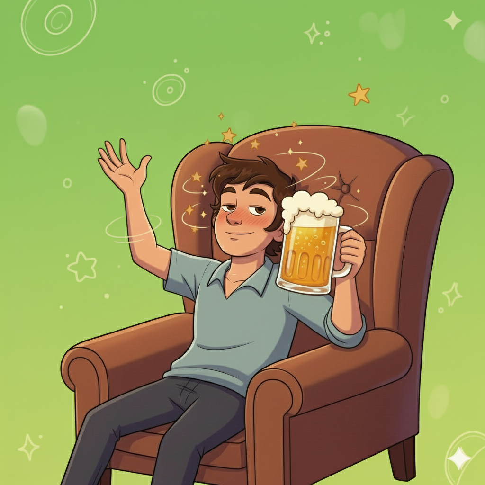
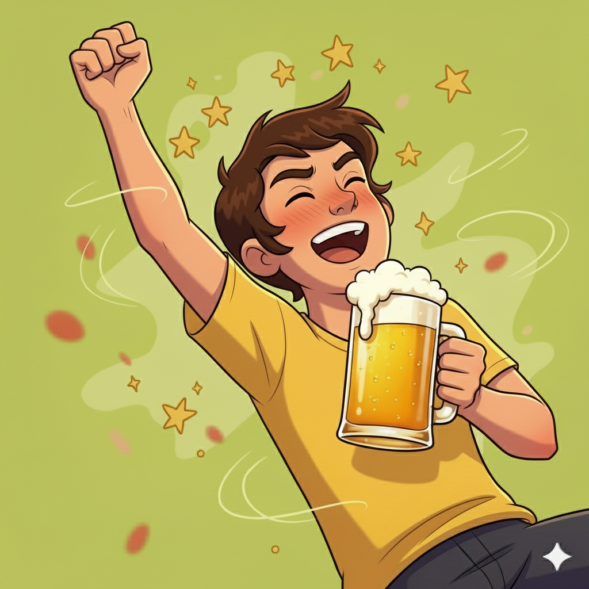
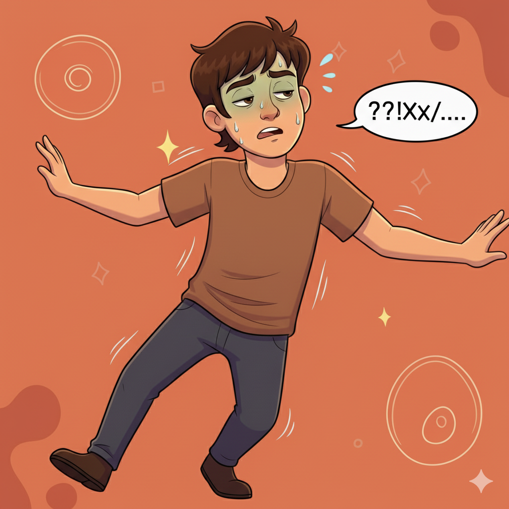
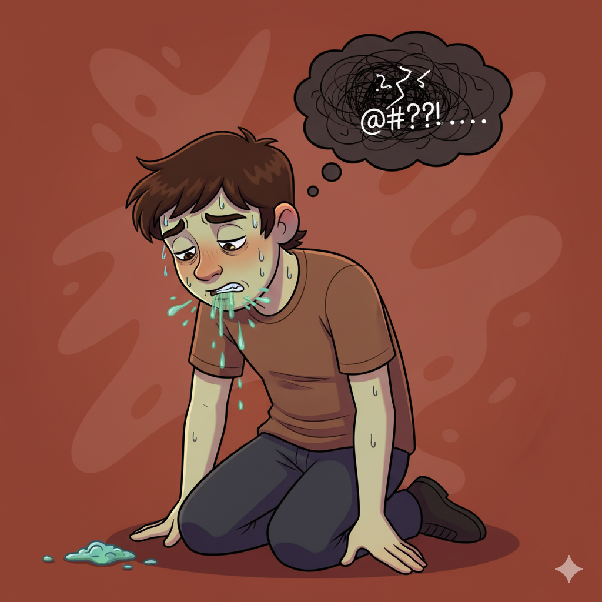
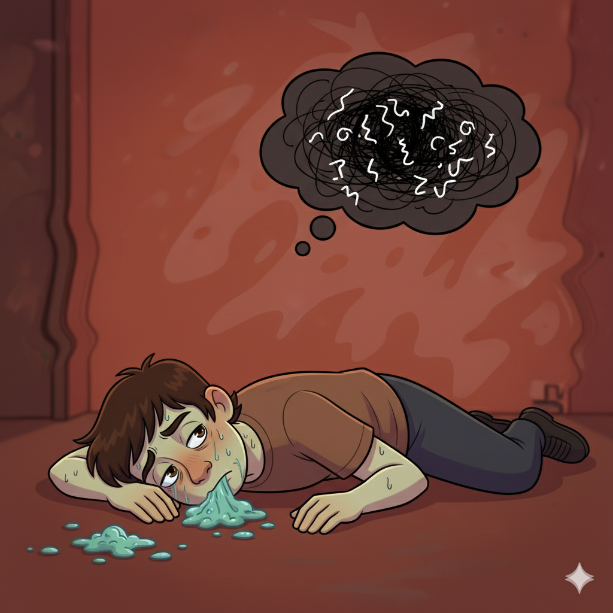
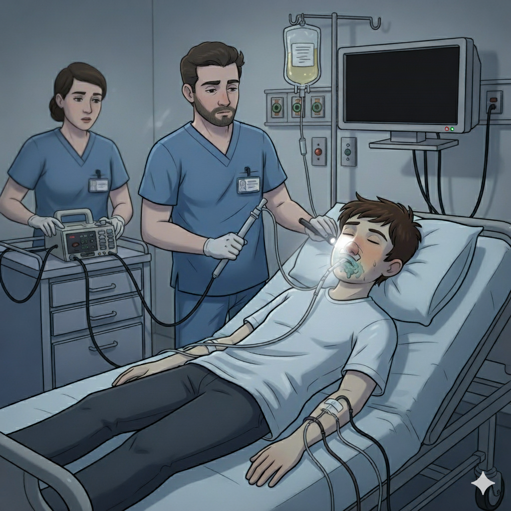

Efectos en el cuerpo del Nivel de Alcohol en sangre
Haz clic en cada estado para ver y escuchar una representación de sus efectos.

0%
🫙
Sobrio
Estado saludable.
Sentidos en completo funcionamiento.
▶️
Ver video

0.03%
🍺
Relajación Inicial
Mareo leve.
Estado de relajación.
Alteración del humor.
▶️
Ver video

0.06%
🍺🍺
Euforia
Júbilo y desinhibición.
Leve deterioro del razonamiento.
▶️
Ver video

0.09%
🍺🍺🍺
Deterioro Leve
Coordinación deficiente.
Deterioro del habla.
Bajo juicio.
▶️
Ver video

0.12%
🍺🍺🍺🍺
Incapacidad
Deterioro motor severo.
Juicio y percepción severamente afectados.
Mareos y vómitos.
▶️
Ver video

0.26%
🍺🍺🍺🍺🍺🍺🍺🍺
Deterioro Grave
Posible pérdida de consciencia.
Completa disfunción mental y fisica.
▶️
Ver video

0.31% y más
☠️
Riesgo Vital
Coma etílico.
Muerte por paro respiratorio.
▶️
Ver video
Importante: La cantidad de bebidas es una estimación para un hombre promedio. El nivel de alcohol en sangre real varía según peso, género, metabolismo y otros factores.